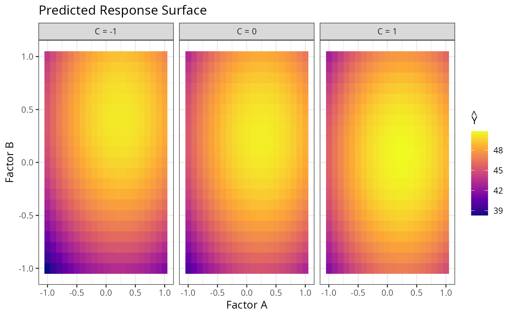

Example 9.3 from Generalized Linear Mixed Models: Modern Concepts, Methods and Applications by Stroup, Ptukhina, and Garai (2024, 2nd ed.)
Source:R/Exam9.3.R
Exam9.3.RdExam9.3 explains Response surface design with incomplete blocking
References
Stroup, W. W., Ptukhina, M., and Garai, S. (2024). Generalized Linear Mixed Models: Modern Concepts, Methods and Applications (2nd ed.). CRC Press.
Author
Muhammad Yaseen (myaseen208@gmail.com)
Adeela Munawar (adeela.uaf@gmail.com)
Examples
## Response Surface Design with incomplete blocking
data(DataSet9.3)
DataSet9.3$block <- factor(x = DataSet9.3$block)
DataSet9.3$aa <- factor(x = DataSet9.3$a)
DataSet9.3$bb <- factor(x = DataSet9.3$b)
DataSet9.3$cc <- factor(x = DataSet9.3$c)
DataSet9.3$a2 <- DataSet9.3$a^2
DataSet9.3$b2 <- DataSet9.3$b^2
DataSet9.3$c2 <- DataSet9.3$c^2
DataSet9.3$ab <- DataSet9.3$a * DataSet9.3$b
DataSet9.3$ac <- DataSet9.3$a * DataSet9.3$c
DataSet9.3$bc <- DataSet9.3$b * DataSet9.3$c
Exam9.3.fm1 <- lmerTest::lmer(
y ~ a + a2 + b + ab + b2 + c + ac + bc + c2 +
aa:bb:cc + (1 | block),
data = DataSet9.3
)
#> fixed-effect model matrix is rank deficient so dropping 24 columns / coefficients
stats::anova(Exam9.3.fm1, ddf = "Kenward-Roger", type = 1)
#> Type I Analysis of Variance Table with Kenward-Roger's method
#> Sum Sq Mean Sq NumDF DenDF F value Pr(>F)
#> a 40.960 40.960 1 12 19.1374 0.0009048 ***
#> a2 22.103 22.103 1 3 10.3272 0.0488220 *
#> b 45.901 45.901 1 12 21.4458 0.0005791 ***
#> ab 1.620 1.620 1 12 0.7569 0.4013689
#> b2 35.975 35.975 1 3 16.8084 0.0262537 *
#> c 4.306 4.306 1 12 2.0117 0.1815368
#> ac 2.205 2.205 1 12 1.0302 0.3301347
#> bc 10.811 10.811 1 12 5.0512 0.0441960 *
#> c2 1.495 1.495 1 3 0.6984 0.4646625
#> aa:bb:cc 1.441 0.480 3 12 0.2245 0.8775621
#> ---
#> Signif. codes: 0 ‘***’ 0.001 ‘**’ 0.01 ‘*’ 0.05 ‘.’ 0.1 ‘ ’ 1
Exam9.3.fm2 <- lmerTest::lmer(
y ~ a + a2 + b + ab + b2 + c + ac + bc + c2 + (1 | block),
data = DataSet9.3
)
stats::anova(Exam9.3.fm2, ddf = "Kenward-Roger", type = 1)
#> Type I Analysis of Variance Table with Kenward-Roger's method
#> Sum Sq Mean Sq NumDF DenDF F value Pr(>F)
#> a 40.960 40.960 1 15 22.6507 0.0002534 ***
#> a2 18.675 18.675 1 3 10.3272 0.0488220 *
#> b 45.901 45.901 1 15 25.3828 0.0001471 ***
#> ab 1.620 1.620 1 15 0.8959 0.3588953
#> b2 30.395 30.395 1 3 16.8084 0.0262537 *
#> c 4.306 4.306 1 15 2.3810 0.1436508
#> ac 2.205 2.205 1 15 1.2194 0.2868867
#> bc 10.811 10.811 1 15 5.9786 0.0273022 *
#> c2 1.263 1.263 1 3 0.6984 0.4646625
#> ---
#> Signif. codes: 0 ‘***’ 0.001 ‘**’ 0.01 ‘*’ 0.05 ‘.’ 0.1 ‘ ’ 1
Exam9.3.fm3 <- lmerTest::lmer(
y ~ a + a2 + b + b2 + c + bc + (1 | block),
data = DataSet9.3
)
stats::anova(Exam9.3.fm3, ddf = "Kenward-Roger", type = 1)
#> Type I Analysis of Variance Table with Kenward-Roger's method
#> Sum Sq Mean Sq NumDF DenDF F value Pr(>F)
#> a 40.960 40.960 1 17 22.4982 0.0001881 ***
#> a2 20.335 20.335 1 4 11.1695 0.0287800 *
#> b 45.901 45.901 1 17 25.2120 0.0001048 ***
#> b2 33.097 33.097 1 4 18.1793 0.0130150 *
#> c 4.306 4.306 1 17 2.3650 0.1424910
#> bc 10.811 10.811 1 17 5.9383 0.0261009 *
#> ---
#> Signif. codes: 0 ‘***’ 0.001 ‘**’ 0.01 ‘*’ 0.05 ‘.’ 0.1 ‘ ’ 1
## Predicted response surface (three panels at c = -1, 0, 1)
agrid <- seq(from = -1, to = 1, by = 0.1)
bgrid <- seq(from = -1, to = 1, by = 0.1)
cgrid <- c(-1, 0, 1)
Newdata <- expand.grid(a = agrid, b = bgrid, c = cgrid)
Newdata$Yhat <- with(Newdata,
50.08500 + 1.6*a + 1.69375*b + 0.51875*c -
3.30250*a^2 - 3.51500*b^2 - 1.16250*b*c
)
Newdata$c_label <- factor(
Newdata$c,
levels = c(-1, 0, 1),
labels = c("C = -1", "C = 0", "C = 1")
)
ggplot2::ggplot(Newdata, ggplot2::aes(x = a, y = b, fill = Yhat)) +
ggplot2::geom_tile() +
ggplot2::scale_fill_viridis_c(option = "plasma", name = expression(hat(Y))) +
ggplot2::facet_wrap(~c_label) +
ggplot2::labs(
title = "Predicted Response Surface",
x = "Factor A",
y = "Factor B"
) +
ggplot2::theme_bw()
